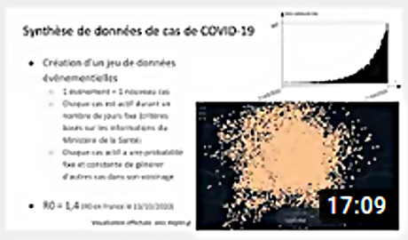
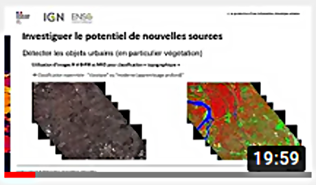
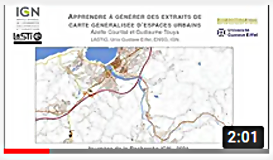
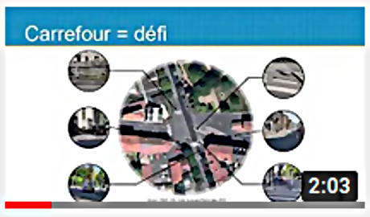
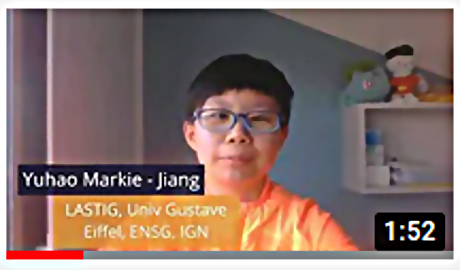
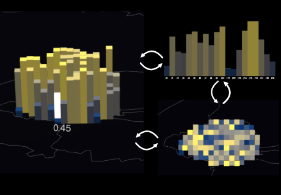
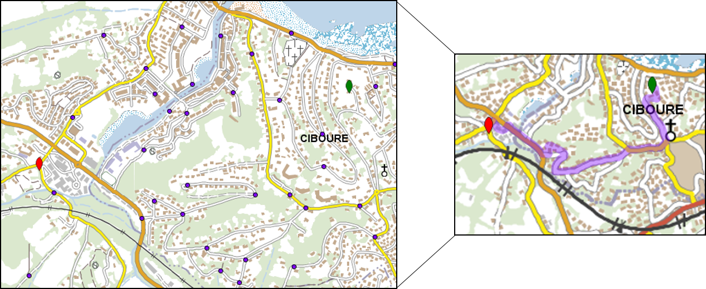
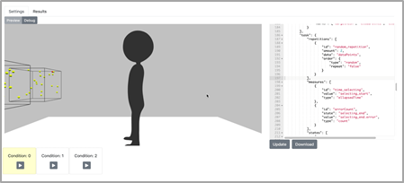

GEOVIS
Equipe Research Team
GEOVIS
GEOVIS
Equipe Research Team
GEOVIS
News
2023
• [New ANR Project:] ECOCIM LASTIG/Mines Paris/Ecole des Ponts (2023-2026) ANR ECOCIM - "Eco-design of district and City Information Models" - Ecoconception de projets urbains à partir de maquettes numériques de villes & approche ACV. Related to Alexandre Mielniczek's PhD ANR ECOCIM - "Eco-design of district and City Information Models" - Ecoconception de projets urbains à partir de maquettes numériques de villes & approche ACV. En relation avec la thèse d'Alexandre MielniczekContact: Sidonie Christophe et Florence Jacquinod
[New PhD Offer: LASTIG/BRGM] (ANR ORACLES) [Nouvelle offre de thèse: LASTIG/BRGM] (ANR ORACLES) Visualization of simulated coastal flooding scenarios
Contact: Sidonie Christophe et Jacques Gautier avant le 15 Mai 2023 Visualisation de scénarios de submersion côtière simulés
Contact: Sidonie Christophe et Jacques Gautier avant le 15 Mai 2023
• [New Internship Offer:] [Nouvelle offre de stage:] Flow visualization in augmented reality Visualisation de flux en réalité augmentée
• [New Internship Offer:] [Nouvelle offre de stage:] Visualization of foot races trajectories Visualisation de trajectoires de courses à pied
2022
• [ISPRS2022 conference :]- Maria Scarlleth Gomes de Castro, Mathieu Brédif.PROJECTIVE MULTITEXTURING OF CURRENT 3D CITY MODELS AND POINT CLOUDS WITH MANY HISTORICAL IMAGES
- 09h40 - M. Brédif - Visualiser les collections dans leur contexte spatial : Navigation immersive dans des photographies historiques dans le cadre du projet ALEGORIA
- 16h10 - S. Christophe / M. Jiang - Exploration représentation tactile et interactive d'un carrefour et enjeux du projet ACTIVMAP
• [Accepted Journal papers:]
- Christophe, S., *Laurent, M., *Mermet, S., Touya, G. (2022) Neural Map Style Transfer Exploration with GANs. International Journal of Cartography.
- Christophe, S., Gautier, J., Chapron, P., Riley, L., Masson, V. (2022). 3D Geovisualization for visual analysis of urban climate. , Cybergeo: European Journal of Geography [En ligne], Cartographie, Imagerie, SIG, document 1008.
2021
• [ICC2021 Talks:]- Gautier, J., Lobo, M.-J., Fau, B., Drugeon, A., Christophe, S., and Touya, G.: COVID-19 Geoviz For Spatio-temporal Structures Detection
- Jiang, Y., Lobo, M.-J., Christophe, S., and Jouffrais, C.: Mapping road crossings for visually impaired paople
• [PhD defense] 08/12/2021: Evelyn Paiz-Reyes, Visual exploration of historical image collections: An interactive approach through space and time: HISTOVIS Prototype
• [Workshop] 2-3/12/2021: Online : Joint ICA Workshop: Cartography connecting Schools.
• [Scientific seminar] 24-25/11/2021: @IGNFrance Saint Mandé / Géoroom : Journées inter-GDRs MAGIS, MADICS et IG-RV "Observation 3D: outils et verrous".
• [ICC2021 accepted papers:]
- Chassin, T., Ingensand, J., Touya, G., Christophe, S. How do users interact with VGE? Users’ behavior evaluation in participatory urban planning.
- Gautier, J., Lobo, M.-J., Fau, B., Drugeon, A., Christophe, S., and Touya, G.: COVID-19 Geoviz for spatio-temporal structures detection., Proc. Int. Cartogr. Assoc., 4, 37, https://doi.org/10.5194/ica-proc-4-37-2021, 2021.
- Paiz-Reyes, E., Brédif, M., Christophe, S. Cluttering Reduction for Interactive Navigation and Visualization of Historical Images. HISTOVIS Prototype
- Jiang, Y., Lobo, M.-J., Christophe, S., Jouffrais, C. Mapping road crossings for visually impaired people, Abstr. Int. Cartogr. Assoc., 3, 127, https://doi.org/10.5194/ica-abs-3-127-2021, 2021.
• [Journée] Journée Visu 2021 Co-organized by Maria-Jesus Lobo.
• [Workshop] CyberCartography workshop AGILE 2021 - Invited talk Sidonie Christophe
• [Talk] Journées de la Recherche 2021:
 | 
|  |
 |  |  |
- PhD Thesis Opportunities -
- Offres de thèse -
- Visualization of simulated coastal flooding scenarios Visualisation de scénarios de submersion côtière simulés
- Interns Opportunities 2023 -
- Offres de stage 2023 -
The GeoVIS team provides geovisualization knowledge, methods and tools allowing various users to design graphic representations of spatio-temporal phenomena, and to infer spatio-temporal knowledge from the interaction with some dimensions of a phenomenon, based on spatial data (maps, imagery, 3D models, DTM, point clouds, etc.) and external data (texts, photographies, web data, thematic data, etc.). The heterogeneity (source, scale, content, precision, dimension, temporality) and the imprecision of these data and represented phenomena imply to address geovisualization issues encompasses cartography, GIS, InfoVis, HCI, computer graphics and image processing.
L'équipe fournit des connaissances formalisées, méthodes et outils de géovisualisation permettant à des utilisateurs variés, de concevoir des représentations graphiques de phénomènes spatio-temporels, sur lesquelles raisonner spatialement et temporellement, en leur permettant d'interagir avec une ou plusieurs dimensions du phénomène, à partir de données géographiques (cartes, imagerie, modèles 3D, modèles numériques de terrain, nuages de points, etc.) et de données externes spatialisées (textes, photographies, données du web, données thématiques, etc.). L’hétérogénéité (source, échelle, contenu, précision, dimension, temporalité) et l'imprécision de ces données comme des phénomènes représentés, impliquent de résoudre des problématiques de géovisualisation, en particulier cartographie, SIG, Visualisation d'Informations, Interaction Homme-Machine, informatique graphique et traitement d'images.
Research topics
Sujets de recherche


Visualization. Visual integration and complexity, abstraction and level of detail (generalization, symbolization), graphic representation (graphic semiology, style).
Visualisation. Intégration et complexité visuelle, abstraction et gestion du niveau de détail (généralisation, symbolisation), représentation graphique (sémiologie graphique, style).


Interaction. Interaction between the users and the visualization, according to the support and use context, the users' tasks, and the visual characteristics or the specific spatial phenomena of study: interaction techniques and models, data and representations continuums, and also analysis and learning from interaction activities and traces.
Interaction. Interaction entre l'utilisateur et la visualisation, en fonction du support et du contexte d’utilisation, des tâches de l'utilisateur, et des caractéristiques visuelles ou phénomènes spatialisés à étudier : techniques et modalités d’interaction, continuums de données et de représentations, analyse et apprentissage à partir des traces d’interaction.



Spatial Immersion. Immersion through devices facilitating visual, tactile and sensitive perception, and the design of geographical spaces: virtual, augmented and mixed realities, tactile maps.
Immersion spatiale. via des dispositifs facilitant la perception visuelle, tactile et sensorielle, et le design des espaces géographiques : réalités virtuelle, augmentée et mixte, cartes tactiles.

Graphic rendering. Improvement of the physical rendering of images, geometric and radiometric analysis, web diffusion of massive data, and real-time 3D rendering.
Rendu Graphique. Amélioration du rendu physique des images, analyse géométrique et radiométrique, diffusion web de données massives, rendu 3D temps réel.
 
User experience (UX). Visual tests, surveys, and prototypes.
Expérimentation utilisateur (UX). Tests visuels, enquêtes, prototypage.
Spatial data processing for visualisation. Spatial analysis, data enrichment, pattern recognition, multiple representation.
Traitement de données spatiales pour la visualisation. Analyse spatiale, enrichissement de données, reconnaissance de formes, représentation multiple.
Staff
Membres
- Permanent staff -
- Membres permanents -
 Mathieu BRÉDIF Researcher Chargé de recherche |  Sidonie CHRISTOPHE Senior researcher Directrice de recherche |  Gerald CHOQUEUX Research Engineer Ingenieur de Recherche |
 Jacques GAUTIER Assistant Professor Enseignant-chercheur |
 Florence JACQUINOD Assistant Professor (EIVP) Enseignante-chercheuse (EIVP) |  Lâmân LELÉGARD Research engineer Ingénieur de recherche |
 María JesúsLOBO Researcher -Head of GEOVIS team- Chargée de recherche -Responsable de GEOVIS- |
LauraWENCLIK Engineer Ingénieure |
- Temporary staff -
- CDD -
 Maieul GRUGET PhD student Doctorant |
Markie Jiang PhD student Doctorante |
Alexandre MIELNICZEK PhD student Doctorant |
Bérénice LE MAO PhD student Doctorante |
- Alumni -
- Anciens -
 Evelyn PAIZ PhD student Doctorante |
 Imran LOKHAT IT scientist Informaticien |  Alexandre DEVAUX Research engineer Ingénieur de recherche |  Qasem SAFARIALLAHKHEILI PhD studentDoctorant |
Pierre BIASUTTI PhD student Doctorant |
Projects
Projects
- On-going research projects -
- Projets en cours -
• Leader: Jean-Marie Favreau (LIMOS, Clermont-Ferrant). G. Touya & S. Christophe involved.
• Porteur: J. Perret (IGN)
- Past research projects -
- Projets passés -
• Leader: V. Gouet-Brunet (IGN)
• Leader: Valéry Masson (MétéoFrance). J. Gautier (post-doc URCLIM), S. Christophe & M. Brédif involved.
• Porteur: G. Touya (IGN)
• Porteur: S. Christophe (IGN)
Publications
- Main publications since 2018 -
- Publications majeures depuis 2018 -
2021• Chassin, T., Ingensand, J., Touya, G., Christophe S., How do users interact with VGE? Users’ behavior evaluation in participatory urban planning. ICC 2021 [Accepted paper].
• Gautier, J., Lobo, M.-J., Fau, B., Drugeon, A., Christophe, S., and Touya, G.: COVID-19 Geoviz for spatio-temporal structures detection., Proc. Int. Cartogr. Assoc., 4, 37, https://doi.org/10.5194/ica-proc-4-37-2021, 2021.
• Paiz-Reyes E., Brédif M., Christophe S., Cluttering Reduction for Interactive Navigation and Visualization of Historical Images. ICC 2021 [Accepted paper].
• Jiang Y., Lobo M-J., Christophe S., Jouffrais, C., Mapping road crossings for visually impaired people, Abstr. Int. Cartogr. Assoc., 3, 127, https://doi.org/10.5194/ica-abs-3-127-2021, 2021.
2020• JR 2020 : GEOVIS talks:
• Çöltekin, A.; Lochhead, I.; Madden, M.; Christophe, S.; Devaux, A.; Pettit, C.; Lock, O.; Shukla, S.; Herman, L.; Stachoň, Z.; Kubíček, P.; Snopková, D.; Bernardes, S.; Hedley, N. Extended Reality in Spatial Sciences: A Review of Research Challenges and Future Directions. ISPRS Int. J. Geo-Inf. 2020, 9, 439. DOI:10.3390/ijgi9070439 (Open Access).
• Çöltekin, A., Griffin, A. L., Slingsby, A., Robinson A. C., Christophe, S., Rautenbach, V., Chen, M., Pettit, C., Klippel, A. 2020. Geospatial Information Visualization and Extended Reality Displays. Chapter 7, Manual of Digital Earth, ISDE.Eds: Huadong Guo, Michael F. Goodchild, Alessandro Annoni, ISDE. https://doi.org/10.1007/978-981-32-9915-3. pp229-274
• Christophe S. 2020. Geovisualization: multidimensional exploration of the territory. In Proceedings of the 15th International Joint Conference on Computer Vision, Imaging and Computer Graphics Theory and Applications - Volume 3: IVAPP, ISBN 978-989-758-402-2, ISSN 2184-4321, pages 325-332. DOI: 10.5220/0009355703250332, 2020, Valletta, Malta.
• Courtial A., El Ayedi A., Touya G., and Zhang X. 2020. ‘Exploring the Potential of Deep Learning Segmentation for Mountain Roads Generalisation’ ISPRS International Journal of Geographic Information, 25 May 2020, 9 (5), 338. https://doi.org/10.3390/ijgi9050338
• Dumont M., Touya G., Duchêne C. Designing multi-scale maps: lessons learned from existing practices. International Journal of Cartography, 6:1, 121-151, 2020. <10.1080/23729333.2020.1717832>
• Gautier J., Brédif M., Christophe S., 2020. Co-visualization of air temperature and urban data for visual exploration. IEEE VIS Short Paper Proceedings, published in IEEE Xplore.
• Gautier J., Christophe S., Brédif M. Visualizing 3D climate data in urban 3D models. XXIV ISPRS Congress, Aug 2020, Nice (en ligne), France. pp.781-789
• Lobo M-J., Hurter C., Irani P. Flex-ER: A Platform to Evaluate Interaction Techniques for Immersive Visualizations.
• Lobo M.-J., Christophe S. Opportunities and challenges for Augmented Reality situated geographical visualization. ISPRS Annals of the Photogrammetry, Remote Sensing and Spatial Information Sciences, 2020. ⟨hal-02878352⟩
• Paiz Reyes E., Brédif M., Christophe S. Geometric distortion of historical images for 3D visualization. ISPRS Annals of the Photogrammetry, Remote Sensing and Spatial Information Sciences, V-2-2020, 649–655, ⟨hal-02863366⟩
• Touya G., Lokhat I. 2020. Deep Learning for Enrichment of Vector Spatial Databases: Application to Highway Interchange. ACM Transactions on Spatial Algorithms and Systems, ACM, In press. 2020.
• Raposo P., Touya G., and Bereuter P. 2020. ‘A Change of Theme: The Role of Generalization in Thematic Mapping’ ISPRS International Journal of Geographic Information, 4 June 2020, 9 (6), 371. https://doi.org/10.3390/ijgi9060371
2019• JR 2019 : GEOVIS PhD's posters:


• Biniek S., Touya G., and Rouffineau G. 2019. ‘Fifty Shades of Roboto: Text Design Choices and Categories in Multi-Scale Maps’. In 29th International Cartographic Conference (ICC 2019), 1:1–8. Advances in Cartography and GIScience of the ICA. Tokyo, Japan, 2019. https://doi.org/10.5194/ica-adv-1-2-2019.
• Christophe, S. 2019. Color Theory. The Geographic Information Science & Technology Body of Knowledge (1st Quarter 2019 Edition), John P. Wilson (Ed.). DOI: 10.22224/gistbok/2019.1.9
• Filières-Riveau, V. Barra, J.-M. Favreau, G., Touya G. 2019. Enrichissement d'orthophotographie par des données OpenStreetMap pour l'apprentissage machine. SAGEO 2019, Clermont-Ferrand.
• Pierkot C., Christophe S., Girres J-F. 2019. Exploring multiplexing tools for co-visualization in crisis units. 16th International Conference on Information Systems for Crisis Response and Management (ISCRAM 2019) Valencia, Spain, May 19-22. p.403-420.
• Touya G., Xiang Z., and Lokhat I. 2019. ‘Is Deep Learning the New Agent for Map Generalization?’ International Journal of Cartography, 9 May 2019, 1–16. https://doi.org/10.1080/23729333.2019.1613071
2018• Biasutti P., Aujol J.F., Brédif M., Bugeau A. 2018. Diffusion and inpainting of reflectance and height LiDAR orthoimages. Computer Vision and Image Understanding, Elsevier, 2018. doi:10.1016/j.cviu.2018.10.011 (ISSN 1077-3142)
• Biasutti P., Aujol J.F., Brédif M., Bugeau A. 2018. Range-Image: Incorporating sensor topology for LiDAR point cloud processing. PE&RS Photogrammetric Engineering & Remote Sensing, ASPRS American Society for Photogrammetry and Remote Sensing, 2018, 84 (6), pp.367--375. <10.14358/PERS.84.6.367>.
• Devaux, A., C. Hoarau, M. Brédif and S. Christophe. 2018. 3D urban geovisualization: in situ augmented and mixed reality experiments. ISPRS Annals of the Photogrammetry, Remote Sensing and Spatial Information Sciences.
• Touya G., Christophe S., Favreau J. M., and Rhaiem A. B. 2018. ‘Automatic Derivation of On-Demand Tactile Maps for Visually Impaired People: First Experiments and Research Agenda’. International Journal of Cartography, 2018. https://doi.org/10.1080/23729333.2018.1486784.